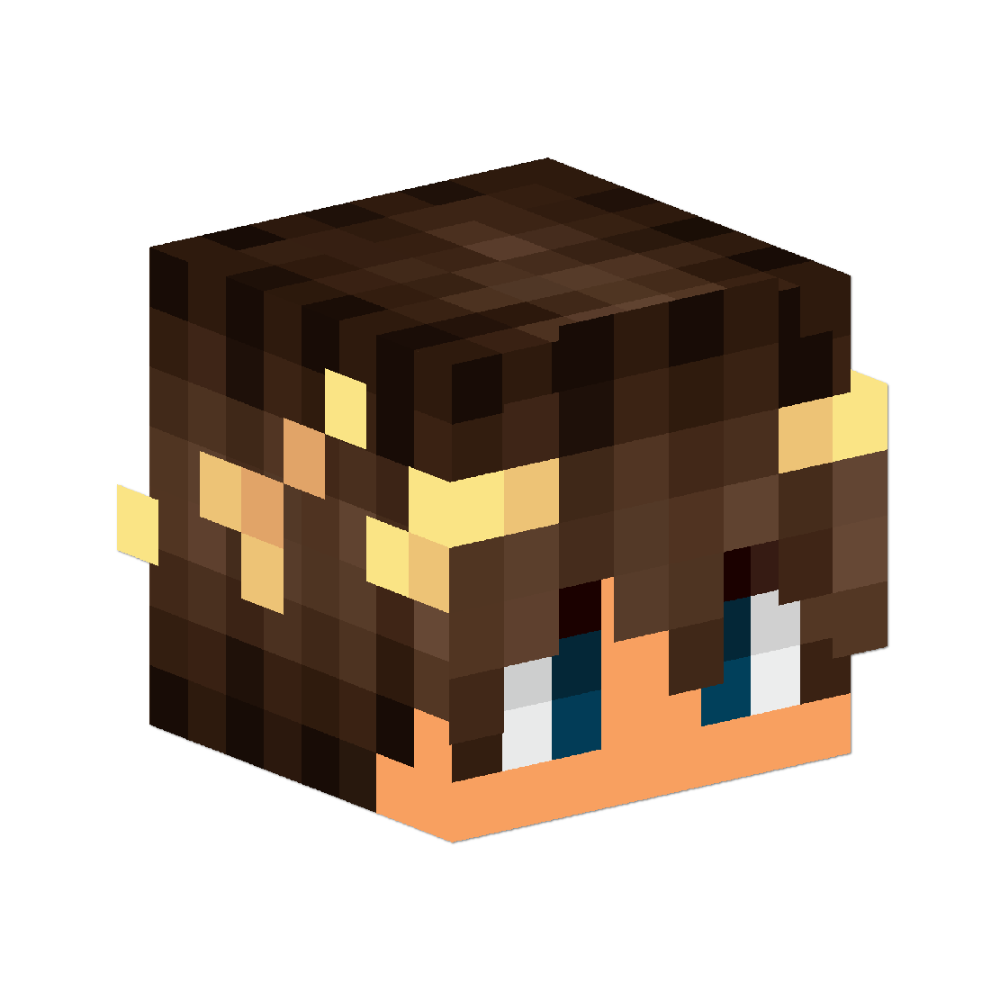
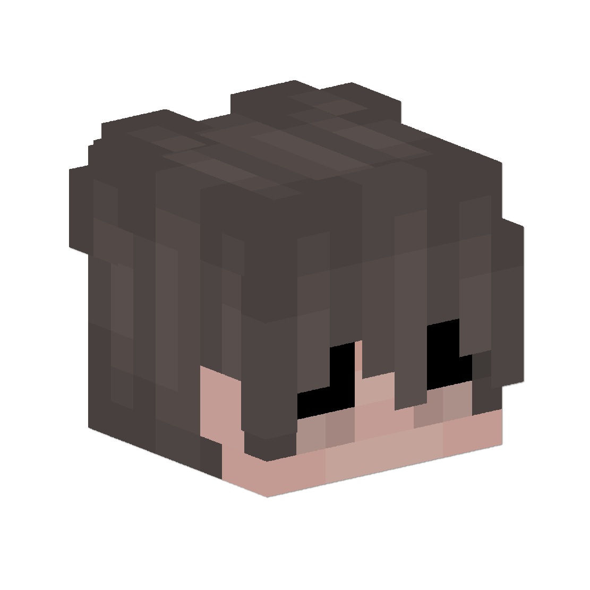

Fratelli di Canaria è un partito nazionalista e conservatore, incentrato sulle ideologie di tradizione e di tutela dell'ordine. Il suo orientamento politico è la Destra.
Il partito è stato rifondato il 2 giugno 2026, a circa un anno dalla sua dissoluzione. Il simbolo scelto è la Fenice: l'animale che rinasce dalle proprie ceneri, a significare rinascita e intraprendenza.
"Si vis pacem, para bellum"
Chi vuole la pace deve prepararsi alla guerra: stabilità non come debolezza, ma come forza necessaria a scoraggiare ogni minaccia.
Difesa dell'identità culturale, storica e linguistica delle Isole Canarie e un'autonomia forte che ne tuteli i residenti.
La sicurezza è la massima espressione della libertà dei cittadini: contrasto all'immigrazione clandestina e potenziamento delle forze dell'ordine.
La famiglia è il nucleo della società: sostegno alla natalità e agli incentivi fiscali, a difesa delle tradizioni storiche e religiose.
Promozione del liberismo attraverso privatizzazione, libera concorrenza e rispetto della proprietà, locale e privata.
Il merito, il talento e l'impegno individuale come fondamenta della giustizia sociale e della vita comunitaria.
Il comando è centralizzato nel Gran Consiglio e si applica il principio della difesa attiva: prepararsi alla guerra per garantire la pace.
Ecco i punti principali. Il testo completo è nello statuto ufficiale.
Partito nazionalista e conservatore. La fiamma tricolore e la Fenice sono il simbolo del partito: rinascita, intraprendenza, resilienza.
Avanzamento e disciplina. Le promozioni si basano su merito, militanza e consenso. Le sanzioni vanno dall'avvertimento all'espulsione, a discrezione del Doge.
Doge e fiducia. Il Doge ha la massima carica. La sfiducia richiede violazioni comprovate dello statuto o inattività prolungata, e l'approvazione di almeno 2/3 dei membri del Consiglio del partito e del Foro Coordinativo.
Composto da Doge, Vice Doge e Consigliere Capo. Prende le decisioni finali sul partito e sulla sua gestione.
Riunione mensile dei consiglieri, con il Gran Consiglio. Da 5 a 15 membri. Discute la linea politica e può proporre, ma la decisione finale spetta al Gran Consiglio.
Guardiano, coordinatori, Consigliere Capo, Doge e Vice Doge. Da 5 a 15 membri. Gestisce eventi, richieste dei tesserati e sanzioni per chi non rispetta il regolamento.
Responsabili della propaganda e Guardiani. Valuta i moduli dei nuovi tesserati per il passaggio a propagandisti e veterani, e gestisce le promozioni.
Fratelli di Canaria: rinasciamo dalle nostre ceneri.

Primo Doge del partito.

Secondo Doge del partito.
Ultimo aggiornamento: 26 ottobre 2026
Sito dedicato al roleplay: il partito, lo statuto e le cariche sono fittizi e fanno parte del gioco. I nick e le skin mostrati appartengono a giocatori reali, per questo ne riportiamo le informazioni minime.
Titolare del trattamento: Fratelli di Canaria (progetto di roleplay). Per qualsiasi richiesta sulla privacy, incluso l'esercizio dei diritti, scrivi a @DiciassetteMich su Telegram. Canale ufficiale: t.me/FdCAtlantisRP.
Il sito non prevede registrazione, login, moduli di raccolta dati o statistiche. Non raccogliamo nome, cognome, email o altri dati personali dei visitatori.
Il sito è ospitato su GitHub Pages. GitHub tratta come fornitore dell'infrastruttura dati tecnici come l'indirizzo IP e i log di navigazione, secondo la propria informativa privacy. Il titolare di questo sito non accede a tali log. Per i trasferimenti di dati fuori dall'Unione Europea, si applicano le garanzie indicate da GitHub nella sua informativa.
Il trattamento dei dati tecnici è necessario per erogare il sito richiesto dall'utente (art. 6, par. 1, lett. f del GDPR).
Puoi chiedere accesso, rettifica, cancellazione, limitazione od opposizione al trattamento scrivendo al contatto indicato sopra. Hai anche il diritto di proporre reclamo all'autorità di controllo dello Stato UE in cui risiedi o lavori. In Italia è il Garante per la protezione dei dati personali.
Se sei un giocatore e vuoi che il tuo nick o la tua skin vengano rimossi dal sito, scrivi al contatto indicato sopra e ti rispondiamo.
Questa informativa può essere aggiornata. La data dell'ultimo aggiornamento è indicata in cima.
Questo sito non installa cookie, né tecnici né di profilazione, e non usa strumenti di analisi di terze parti. Non ha un banner cookie perché non ci sono cookie da autorizzare. Il sito non carica risorse esterne al caricamento della pagina: font, script e immagini sono locali.
Il sito contiene link esterni che si aprono solo se li selezioni: lo statuto su Google Docs e i link a Telegram. Su quei siti vale la loro informativa, non questa.
Puoi disattivare o cancellare i cookie dalle impostazioni del browser. Il sito funziona comunque.